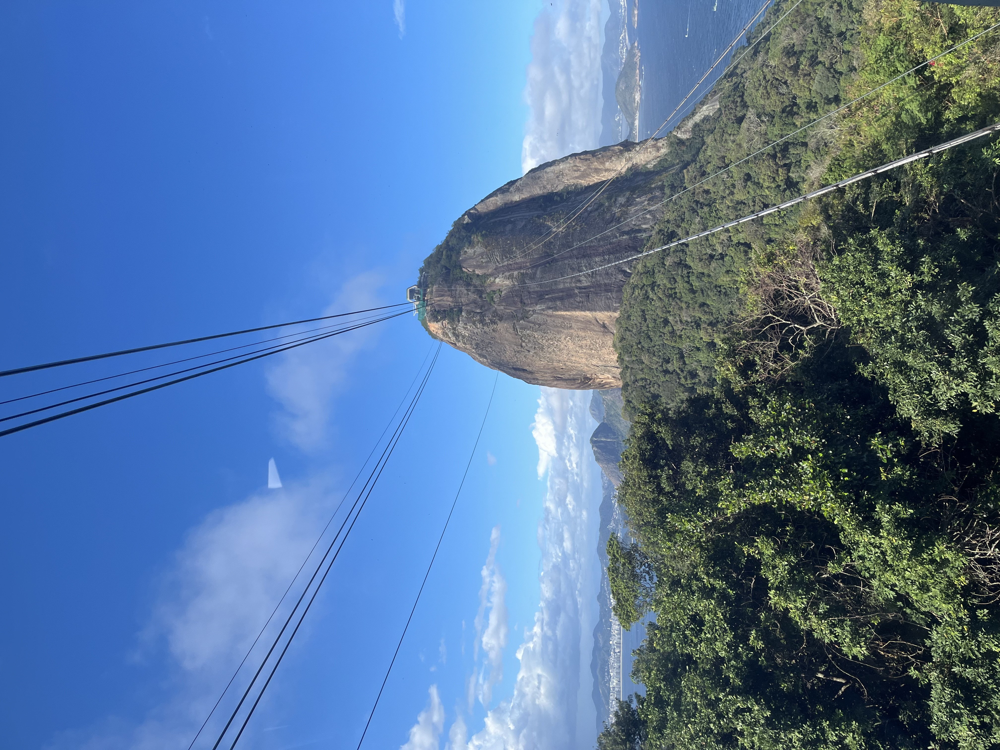

Pan de Azúcar

El Pan de Azúcar (Pão de Açúcar) es un cerro de granito ubicado a la entrada de la bahía de Guanabara. Se puede subir en un teleférico que fue inaugurado el 27 de octubre de 1912, convirtiéndose en el primero de su tipo en Brasil.
Desde la cima se obtiene una de las vistas panorámicas más completas de la ciudad, con Copacabana, el Cristo Redentor y el centro de Río de Janeiro a la vista.
← Volver a la página principal